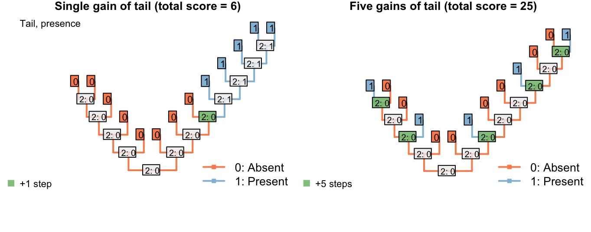

3 A solution
3.1 Minimising homoplasy
A solution can be found if the goal of parsimony is recast not in terms of minimising the number of steps, but instead of minimising the amount of homoplasy in a tree.
De Laet has made this point before (De Laet, 2005, 2015), suggesting that a tree’s score should be calculated as
Total score = Number of steps + Number of (additional) regions.
Practically, because the number of unavoidable regions is a function of a dataset and not of a tree, one could also count
Total score = Number of steps + Number of regions
which would be a constant number larger than the total score generated just counting additional regions; the absolute value of the score is not meaningful in itself and is not comparable between datasets, so the calculation method does not affect tree search.
The tree below gives an example of a tree in which a character in applicable in two regions (one more than the minimum possible, one) and one state change.

This score denotes two evolutionary observations that cannot be attributed to inheritance from a common ancestor: the blueness of tail in the blue tailed taxa (as the common ancestor inherited a red tail), and the redness of tail in the second region of the tree (as the common ancestor of all tail-bearing taxa did not itself have a tail, so tail colour could no be inherited).
3.1.1 What does it take to denote separate regions?
It takes three inapplicable nodes (including tips) to force two regions of the tree to be separrated by an inapplicable region.
This can be estabilshed by imagining the Fitch optimisation of a separate character
Applicability of the character of interest: (0), inapplicable; (1), applicable
In the case of tail colour, this applicability character has the same distribution as the presence / absence of the tail, but this is not necessarily the case (there may be a range of reasons to code a character as inapplicable).
In the tree shown above, the Fitch algorithm identifies two regions where the applicability character is unambiguously ‘applicable’:

If one of the inapplicable tips had instead been ambiguous, then the same distribution would arise:

But if two were ambiguous, then the ‘inapplicable’ region could equally be interpreted, under the Fitch algorithm, as ‘applicable’ – with the two inapplicable tips becoming inapplicable in the branches that led to them:

The ambiguous region of this tree may parsimoniously be interpreted as applicable, and doing so increases the opportunity to attribute shared colours in the tail to common ancestry, this our algorithm chooses to interpret the region as applicable whereever it is parsimonious to do so.
Note that the three inapplicable tips necessary to define an inapplicable region must be in a contiguous region of the tree, separated from one another only by taxa whose applicability is ambiguous, in order for two applicable regions to be reconstructed as separate.
3.1.2 How this fixes the problem
This overcomes the problem where steps cancould be avoided by inferring multiple innovations of a character:

On the other hand, if taxa either have a blue, scaly, straight tail or a red, smooth, curly tail, then the fact that the tails have so little in common means that it wouldn’t be entirely surprising if the two different tail types evolved twice. This scenario thus incurs a cost of only one step (for the additional origin of the tail) more than if the tail evolved once, and change all its attributes:

3.1.3 Summary
This is the desired behaviour. But how do we count this in practice?
In brief, we evaluate for each tip whether the character in question is applicable, inapplicable, or ambiguous (could be either), and use the standard Fitch algorithm on this applicability data to reconstruct the state of each internal node, reconstructing ambiguous nodes on the uppass as applicable.
This done, we conduct a second Fitch-like pass on the tree, in which we count transformations if they occur at nodes in which the character has been reconstructed as applicable. Additional regions are also counted on this downpass, by counting nodes that are ancestral to an inapplicable region of the tree that itself leads to an as-yet-uncounted applicable region.
References
De Laet, J. (2005). Parsimony, phylogeny and genomics. In V. Albert (Ed.) (pp. 81–116). Oxford University Press.
De Laet, J. (2015). Parsimony analysis of unaligned sequence data: maximization of homology and minimization of homoplasy, not minimization of operationally defined total cost or minimization of equally weighted transformations. Cladistics, 31, 550–567. doi:10.1111/cla.12098